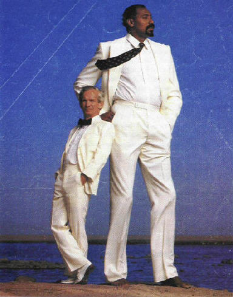

With his brother (1936)

With his brothers and sisters (1936)

With his mother (1939)

Wilt Chamberlain, a famous NBA basketball player, and Willie Shoemaker, a famous horse racing jockey. Chamberlain was 7 feet, 1 inch tall, and weighed 275 pounds. Willie Shoemaker was barely 100 pounds and only 4 feet, 11 inches tall.
This famous picture of Wilt Chamberlain and Willy Shoemaker shows
the
wonderful range of
differences in such traits as height, weight, skin color. But, it
is
also representative of many
differences you don't see – susceptibility to heart disease,
cancer,
asthma and diabetes. All of
these differences are underlain by the action of multiple genes
working
together with
environment.
According to Darwin's theory of natural selection, variation such
as
this exists in all species. As the environment gradually
changes,
pressure will be placed upon the individuals of the species to
adapt,
favoring
some individuals due to the characteristics they possess.
There
are
two very important points to remember about Darwin's theory.
First,
there are no inherent superior characteristics. Being tall
or
short,
being able to see or not see, being able to fly or not fly, are
good or
bad depending on the local environment. Second, there is no
guarantee
that when the environment changes that any set of characteristics
within
a species will match the change. In fact, Darwin's theory
predicts
that over time the vast majority of species will become extinct,
and no new species will evolve from the older species. This
prediction
of massive extinction is matched empirically by the fossil record.
At one time, Robert Pershing Wadlow was the tallest person known to have lived. His was 8' 11.1" and weighed 490 pounds by the time he died. By the time he attended kindergarten at age 5 he was already 5' 6 1/2" tall and wore clothes that would fit a 17 year old boy. By the time he was 10 years old he had a shoe size of 17 ½..
In the pictures below, notice the height of his parents and siblings. All are of normal height, demonstrating that an extreme variation can occur at any time in a species.